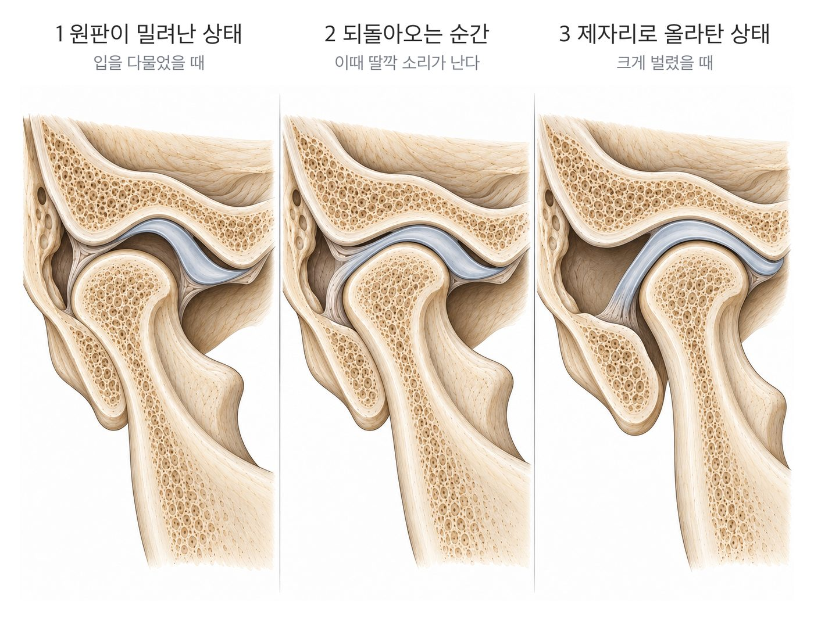

관절 속 디스크(관절원판)가 잠시 밀려났다가 제자리로 돌아올 때 '딱' 소리가 납니다.
통증 없이 소리만 나는 경우는 흔하고, 모든 턱 소리가 치료가 필요한 것은 아닙니다.
중요한 것은 소리 자체보다 함께 나타나는 증상입니다 — 통증, 입 벌림 제한, 걸림.
소리가 나던 턱에서 소리가 사라지면서 입이 덜 벌어진다면, 턱이 잠기고 있다는 신호일 수 있습니다.
턱관절 안에는 뼈와 뼈 사이에서 쿠션 역할을 하는 얇은 조직이 있습니다. 이를 관절원판(디스크)이라고 합니다.
입을 벌리고 다물 때 디스크와 턱뼈는 함께 움직입니다. 이때 둘의 위치가 잠시 어긋났다가 다시 맞춰지면 '딱' 또는 '톡' 하는 소리가 납니다. 위 그림처럼 ① 디스크가 밀려난 상태에서 ② 되돌아오는 순간 소리가 나고 ③ 제자리로 올라탄 뒤에는 크게 벌어집니다.
손가락 마디에서 소리가 나는 것과 비슷하게, 통증이나 움직임의 제한 없이 소리만 나는 경우도 많습니다.
자동으로 재생됩니다. 빨간색이 앞으로 밀려난 디스크이고, 과두가 그 밑으로 올라타는 순간 소리가 납니다. 손잡이를 끌어 천천히 볼 수도 있습니다.
| 구분 | 지켜봐도 되는 경우 | 진료가 필요한 경우 |
|---|---|---|
| 통증 | 없음 | 입을 벌리거나 씹을 때 아픔 |
| 입 벌림 | 평소처럼 잘 벌어짐 | 예전보다 잘 안 벌어짐 |
| 턱 움직임 | 걸리거나 잠기지 않음 | 걸렸다 움직이거나 잠김, 한쪽으로 틀어짐 |
| 소리의 양상 | 늘 나던 '딱' 소리 그대로 | 갑자기 커짐, 사각사각·모래 갈리는 소리로 바뀜 |
| 치아 맞물림 | 변화 없음 | 위아래 치아가 닿는 느낌이 갑자기 달라짐 |
왼쪽에 해당한다면 급하게 치료를 시작하기보다 생활습관을 조절하며 지켜볼 수 있습니다. 오른쪽에 해당하는 것이 하나라도 있다면 진료를 받아보시기 바랍니다.
소리의 종류와 시점, 입 벌림 범위, 턱의 움직임 경로, 씹는 근육의 압통을 확인합니다.
통증이나 개구 제한이 확인되면 생활습관 조절, 물리치료, 교합안정장치(스플린트) 등 가벼운 치료부터 단계적으로 진행합니다.
소리에 더해 통증이나 걸림이 생겼다면, 디스크의 움직임을 확인해 드립니다.
전화 상담 02-6745-2754이 페이지는 일반적인 건강정보이며 개인의 진단이나 치료를 대신하지 않습니다. 증상이 지속되거나 갑자기 악화되면 의료기관에서 진료를 받으시기 바랍니다.